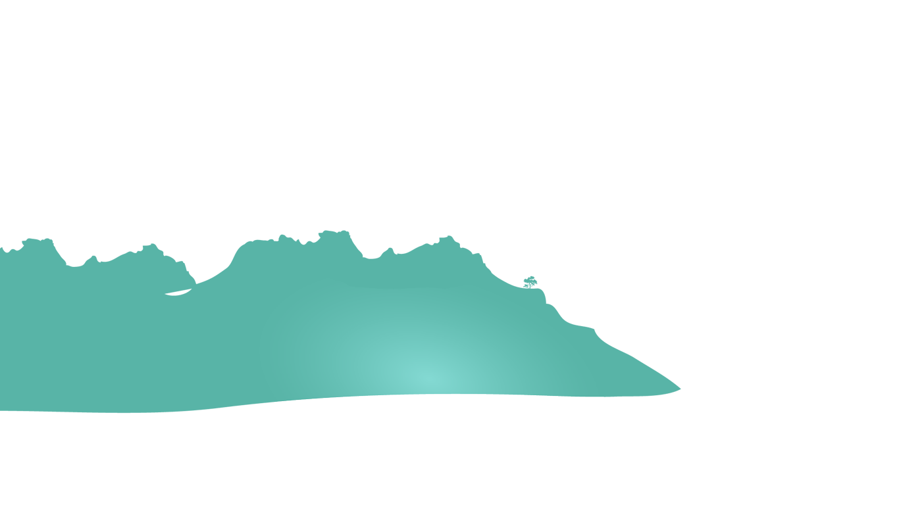
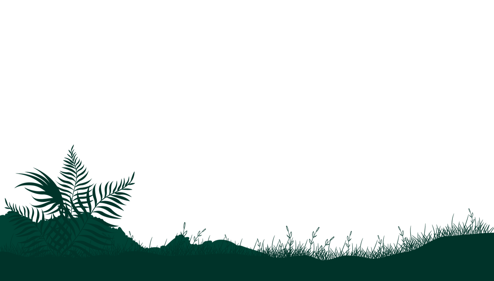

This parallax website started as a tutorial project and became an opportunity to explore scroll-based animations and interactive design. Building it helped me understand how JavaScript, HTML, and CSS work together to create engaging user experiences.
While developing this project, I experimented with layered elements, DOM manipulation, and animation techniques to better understand how parallax effects are implemented. I also gained hands-on experience with responsive layouts and problem-solving through debugging and customization.
More importantly, this project taught me that tutorials are just a starting point. By modifying and extending the original idea, I was able to make it my own while continuing to grow as a frontend developer.